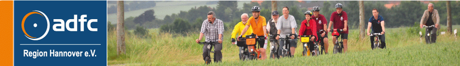](http://www.adfc-hannover.de/)
Letzte Änderung: 2019-09-27-20h16
Autor: Jens Spille
Die Radverkehrsmängel und Verbesserungsvorschläge, die auf dieser Seite gelistet sind, beziehen sich größtenteils auf unsere Mängelkarte (Übersicht). Somit steht einmal zur Übersicht die Mängelkarte zur Verfügung, andererseits steht diese Liste mit detaillierteren Angaben zur Verfügung.
Link zur Mängelkarte
Um eine Zuordnung der Mängel und Verbesserungsvorschläge zu ermöglichen, ist jeder Pin und jede Linie auf der Mängelkarte mit einer eindeutigen Bezeichnung versehen.
Als Bezeichner wird der Open Location Code verwendet. Der Open Location Code (OLC) gibt geographische Koordinaten an. Gegenüber der konventionellen Schreibweise in Winkelgrad ist er kompakt, eindeutig, und leicht an die erforderliche Genauigkeit anzupassen. OLC wird auch als “Plus Codes” bezeichnet.
So befindet sich zum Beispiel die Fahrrad-Selbsthilfewerkstatt mit den Ziffern 9F4F8P9F+J9 an der den geographische Koordinaten 52.319063 Grad Nord und 9.723438 Grad Ost (Heinrich-Hertz-Straße 23, 30966 Hemmingen, Deutschland). Das erste Ziffernpaar des Open Location Codes zerlegt den Globus in 20 × 20 Grad große Flächen. Norddeutschland liegt im Sektor 9F.
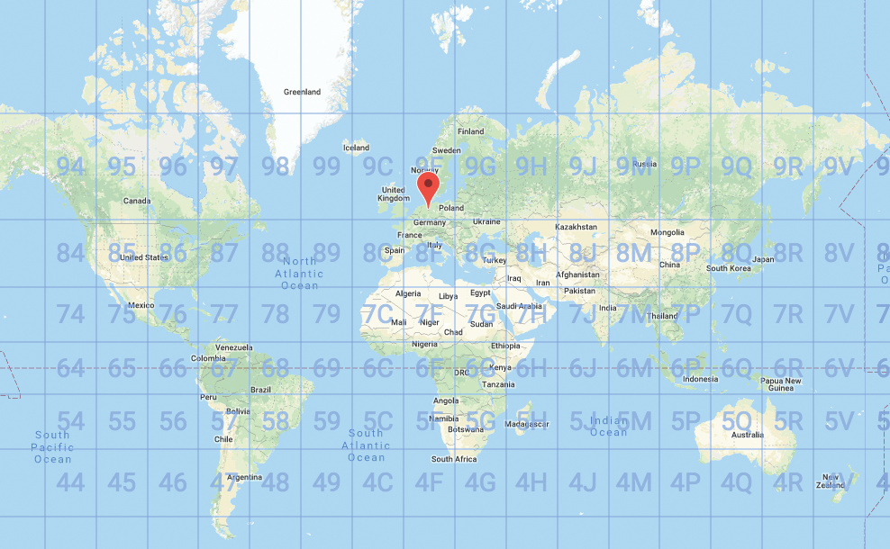
Jedes weitere OLC-Ziffernpaar „zwanzigselt“ den bis dahin definierten Bereich in jeder Dimension. Die Ziffern 9F4F beschreiben den Bereich um Hannover.
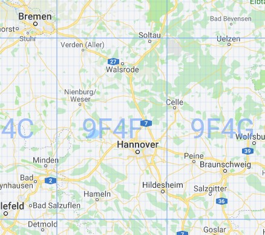
Zum Auffinden des Bereichs gibt man zum Beispiel die Ziffern ’9F4F8P9F+J9’auf der Webseite https://plus.codes ein. Die ersten vier Stellen nennt man Area-Code, 9F4F im obigen Beispiel. Der Area Code wird hier weggelassen, da ohnehin klar ist, welcher Ort gemeint ist.
| Kurzbeschreibung | An der K227 fehlt ein Radweg |
|---|---|
| Mängelkarte | Link |
| Einstelldatum | 2017-09-13 |
| Status | Der Verwaltung bekannt |
| Autor | Jens Spille |
| Ort | Hemmingen - Verbindung Hiddesdorf (L389) - Lüdersen - K227 |
| Fahrtrichtung | In beiden Richtungen |
| Verantwortlich | Kreisstraße - Region Hannover |
Entlang der K227 fehlt ein Radweg. Die Straße ist schmal und es ist vor einigen Jahren zu einem tödlichen Unfall gekommen.
Bau eines Radweges.
| Kurzbeschreibung | Lücke von Pattenser Feldweg nach Hiddestorf |
|---|---|
| Mängelkarte | Link |
| Einstelldatum | 2015 |
| Status | offen |
| Autor | Radverkehrskonzept |
| Ort | Pattenser Feldweg nach Hiddestorf |
| Fahrtrichtung | In beiden Richtungen |
| Verantwortlich | Stadt Hemmingen |
Geforderter Lückenschluss aus Radverkehrskonzept 2015.

Verbindung herstellen
Aus Radverkehrskonzept 2015 bekannt.
| Kurzbeschreibung | Weg an Arnumer Landwehr nass und rutschig |
|---|---|
| Mängelkarte | Link |
| Einstelldatum | 2019-01-23 |
| Status | offen |
| Autor | 23. RadelTreff |
| Ort | Osterbuschweg - an der Arnumer Landwehr |
| Fahrtrichtung | In beiden Fahrtrichtungen |
| Verantwortlich | Stadt Hemmingen |
Der Osterbuschweg - an der Arnumer Landwehr - ist bei Regen nass und matschig. Es besteht Rutschgefahr.
Neues Mineralgemisch aufbringen und regelmäßig von Laub befreien, bevor es zerfällt.
| Kurzbeschreibung | Radweg zwischen Harkenbleck und Reden - Bankett ist abgesackt |
|---|---|
| Mängelkarte | Link |
| Einstelldatum | 2017-09-10 |
| Status | offen |
| Autor | Jens Spille |
| Ort | Verbindung zwischen Harkenbleck und Reden |
| Fahrtrichtung | In beiden Richtungen |
| Verantwortlich | Region Hannover |
Sturzgefahr am Radwegrand, da das Bankett versackt ist.
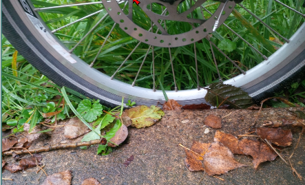
Bankett auffüllen und befestigen.
| Kurzbeschreibung | Pfad von Loydbrunnenweg bis zur Ihme ist sanierungsbedürftig |
|---|---|
| Mängelkarte | Link |
| Einstelldatum | 2019-01-23 |
| Status | offen |
| Autor | Jens Spille |
| Ort | Devese, Loydbrunnenweg bis zur Ihme |
| Fahrtrichtung | In beiden Fahrrichtungen |
| Verantwortlich | Hier Stadt Hemmingen |
Der Weg entlang der Ihme, auf dem Gebiet Ronnenberg, wurde im Sommer 2019 saniert. Jetzt fehlt noch der Teil auf dem Hemminger Gebiet.
Ertüchtigung des Weges
| Kurzbeschreibung | Umbau Arnum Mitte - Shared Space |
|---|---|
| Mängelkarte | Link |
| Einstelldatum | 2019-03-17 |
| Status | offen |
| Autor | ADFC Team |
| Ort | Arnum Mitte |
| Fahrtrichtung | In allen Richtungen |
| Verantwortlich | Stadt Hemmingen |
Die Bundesstraße in Arnum Mitte soll nach Fertigstellung der B3 Neu zurück gebaut werden.
Der ADFC Hemmingen/Pattensen ist für einen “gemeinsamen Raum” im Zentrumsbereich auch “Shared-Space” genannt, vom Klapperweg im Norden bis zum Harkenblecker Weg im Süden.
Der Bereich selber soll nicht streng nach Verkehrsflächen für die einzelnen Nutzergruppen unterteilt sein und muss durch eine deutliche Kennzeichnung von der übrigen Straßengestaltung, bestehend aus zwei Fahrspuren mit Fahrrad-Schutzstreifen getrennt werden, zum Beispiel durch eine Pflasterung und Stadttore.
Die Ausgestaltung muss an der zu erwartenden Verkehrsdichte angepasst werden und eventuell Schutzräume für Fußgänger sowie Querungshilfen für Kinder beinhalten. Der Kfz-Verkehr soll durch die Umgestaltung in seinen Verhaltensweisen so beeinflusst werden, dass sich eine langsamere, aber reibungslose Verkehrsabwicklung einstellt. Es muss sichergestellt sein, dass der Weg über die Umgehungsstraße die attraktivere Verbindung in der Nord-Süd-Achse ist.
In der Ortschaft Bohmte (Nds.), eine Stadt mit etwa 12.600 Einwohnern (2016) in der Nähe von Osnabrück, gibt es seit vielen Jahren den ersten Ort mit einem Shared-Space Konzept nach niederländischen Vorbildern.
Im Verkehrsschwerpunkt am zentralen Platz in Bohmte überlagern sich zwei Kreuzungen, die von täglich 12.000 Fahrzeugen passiert werden. Shared-Space ist keine “Spielstraße” und durchaus für Arnum umsetzbar. Gerne würden wir eine gemeinsame Exkursion mit allen Interessierten nach Bohmte durchführen.
Der ADFC Hemmingen/Pattensen fordert einen Gemeinschaftsraum statt einer Verkehrs- Trasse. Ziel ist eine Gestaltung des Straßenraumes, die intuitiv zu einer langsameren Fahrweise und einer stärkeren gegenseitigen Rücksichtnahme anhält. Dieses schließt fließenden und parkenden Verkehr sowie Räume zum Verweilen und Kommunizieren mit ein.
ADFC-Stellungnahme_Städtebauliche-Sanierung-Arnum-Mitte.pdf
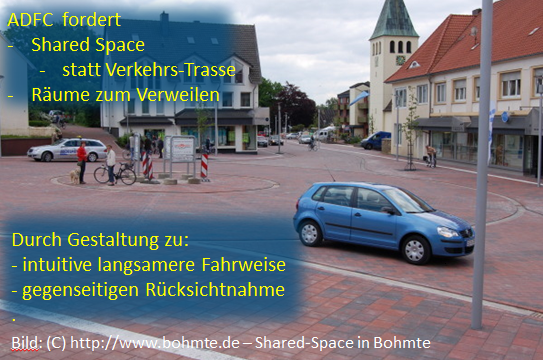
| Kurzbeschreibung | Bockstraße bis Beethovenstraße - Lückenschluss fehlt |
|---|---|
| Mängelkarte | Link |
| Einstelldatum | 2015 |
| Status | offen |
| Autor | Radverkehrskonzept |
| Ort | Bockstraße bis Beethovenstraße |
| Fahrtrichtung | In beiden Richtungen |
| Verantwortlich | Stadt Hemmingen |
Geforderter Lückenschluss aus Radverkehrskonzept 2015.
Verbindung herstellen
Aus Radverkehrskonzept 2015 bekannt.
| Kurzbeschreibung | Kreuzung B3 (alt) - Zwischen Hoher Holzweg und Im Sundern - Unklare Verkehrsführung |
|---|---|
| Mängelkarte | Link |
| Einstelldatum | 2018-01-05 Stellungsnahme vom VEP2030 |
| Status | Vorschlag |
| Autor | Jens Spille |
| Ort | Kreuzung B3 (alt) / Hoher Holzweg |
| Fahrtrichtung | Alle |
| Verantwortlich | Hemmingen (in Zukunft) |
Vom Hohen Holzweg kommend gibt es keinen Radweg zur Ampel. Unklare Verkehrsführung für Radfahrer, da die Streuscheibe der Ampel eine kombinierte Fußgänger und Radfahrer Ampel ist. Wenn Radfahrer vor der Shell Tankstelle stehen, besteht eine Gefahr durch Rechtsabbieger. Verwirrung durch ungünstige Verkehrsführung.
Radfahrer aus Hoher Holzweg in Richtung Sundernweg richten sich teilweise nach der LSA mit der gemeinsamen Streuscheibe für Fuß- und Radverkehr. Dazu wechseln sie von der Fahrbahn Hoher Holzweg auf den Hochbord, um die Furt des LSA zu benutzen (Karte - Punkt 1). Rechts abbiegende Autofahrer aus Hoher Holzweg übersehen leicht die Fußgänger und Radfahrer, da ein Schild den Blick versperrt (Karte - Punkt 2).
Das Radfahren von der Gartenstraße/Mühlenweg bis zur Shell-Tankstelle auf der linken Seite ist nicht freigegeben. Einen sicheren Übergang vom der Gartenstraße auf die rechte Fahrbahnseite gibt es nicht, deshalb fahren die Schüler, linksseitig auf den Fußweg, um dann die LSA Hoher Holzweg - Sundernweg zu benutzen. In umgekehrter Richtung ist der Fußweg an der B3 für Radfahrer frei gegeben “Fahrrad frei”.
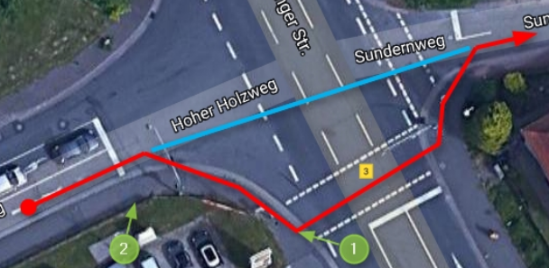
Eine Radfahrerfurt nahe der Fahrbahn einrichten (blaue Linie). - Überweg in Höhe Gartenstraße einrichten.
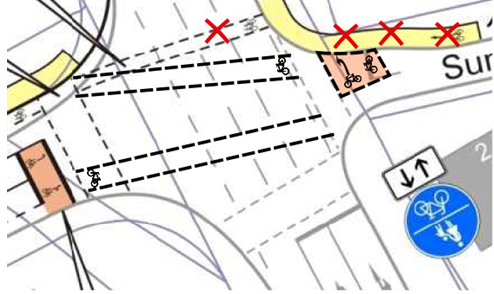
| Kurzbeschreibung | Kreuzung Mutter Buermann - Querungshilfe fehlt |
|---|---|
| Mängelkarte | Link |
| Einstelldatum | 2017-12-05-Di |
| Status | Verbesserungsvorschlag |
| Autor | Jens Spille |
| Ort | Devese K 221 / Stadweg |
| Fahrtrichtung | Von West nach Ost |
| Verantwortlich | Region |
Radfahrende aus Richtung Westen müssen ungesichert die Fahrbahn kreuzen, um auf den linksseitigen Radweg zu gelangen. Radfahrende haben keine vernünftige Alternative um die Fahrbahn sicher zu queren.
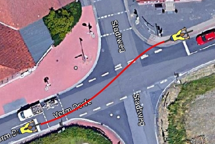
Angebot einer Alternative - z.B. indirektes Abbiegen.
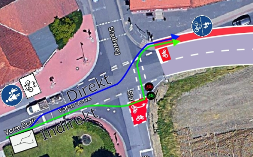
| Kurzbeschreibung | Ausfahrt auf die Freda-Wüsthoff-Straße - unübersichtlich |
|---|---|
| Mängelkarte | Link |
| Einstelldatum | 2015 |
| Status | offen |
| Autor | Radverkehrskonzept |
| Ort | Feld südostlich Freda-Wüsthoff-Straße |
| Fahrtrichtung | In beiden Richtungen |
| Verantwortlich | Stadt Hemmingen |
Ausfahrt auf die Freda-Wüsthoff-Straße ist unübersichtlich.
| Kurzbeschreibung | Bankett B3 zwischen Westerfeld und Arnum ist abgesackt |
|---|---|
| Mängelkarte | Link |
| Einstelldatum | 2017-09-10 |
| Status | Ist der Verwaltung bekannt |
| Autor | Jens Spille |
| Ort | B3 Verbindung zwischen Arnum und Hemmingen Westerfeld |
| Fahrtrichtung | In beiden Richtungen |
| Verantwortlich | In Zukunft Stadt Hemmingen |
Sturzgefahr am Radwegrand, da das Bankett versackt ist. 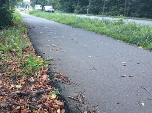
Bankett auffüllen
| Kurzbeschreibung | Alle 3 Kreisel mit Radwege Rot Markierung versehen |
|---|---|
| Mängelkarte | Link |
| Einstelldatum | 2019-07-03 |
| Status | offen |
| Autor | 25. RadelTreff |
| Ort | Devese - 3 Kreisel |
| Fahrtrichtung | In allen Fahrtrichtungen |
| Verantwortlich | Region Hannover |
Mehr Aufmerksamkeit durch KFZ gewünscht. Erhöhung der Sicherheit.
Alle 3 Kreisel mit einer Rot Markierung versehen
| Kurzbeschreibung | Deveser Straße zur Radfahrstraße umwidmen |
|---|---|
| Mängelkarte | Link |
| Einstelldatum | 2019-07-03 |
| Status | offen |
| Autor | 25. RadelTreff |
| Ort | Deveser Straße |
| Fahrtrichtung | In beiden Richtungen |
| Verantwortlich | Regionstraße |
Die Deveser Straße hat jetzt und auch später wenig KFZ Verkehr und ist gut geeignet den Radverkehr zu fördern.
Zur Steigerung des Radverkehr wird vorgeschlagen die Deveser Straße zur Radfahrstraße umzuwidmen.
| Kurzbeschreibung | Autofahrer und Radfahrer können sich nicht sehen. |
|---|---|
| Mängelkarte | Link |
| Einstelldatum | 2017-09-10 |
| Status | Verwaltung bekannt´ |
| Autor | Jens Spille |
| Ort | Hemmingen - Westerfeld - Weetzener Landstraße (K221) - Einmündung Sundernstraße |
| Fahrtrichtung | In Richtung Osten |
| Verantwortlich | Hemmingen |
Fahrzeugfahrer aus der Sundernstraße kommend, können die Radfahrer die linksseitig aus Richtung Westen kommen nicht, oder erst spät sehen. Erschwerend kommt hinzu, dass die Radfahrer (auch ungeübte), an dieser Stelle, aufgrund des Gefälles eine “flotte” Geschwindigkeit erreichen.

Sichtdreieck herstellen. Evtl. Spiegel. Bodenmarkierung mit zwei Pfeilen.
| Kurzbeschreibung | Radweg Weetzener Landstraße - Löcher, Brüche und Unebenheiten |
|---|---|
| Mängelkarte | Link |
| Einstelldatum | 2019-06-03 |
| Status | Verbesserungskonzept durch Region vorgestellt |
| Autor | RADar! |
| Ort | Weetzener Landstraße - östlich B3 (alt) |
| Fahrtrichtung | In beiden Fahrtrichtungen |
| Verantwortlich |
Über RADar! wurde eine neue Meldung eingestellt. ID: 2019-19750
Loch, Unebenheit, Bruch oder Riss im Oberbau erhöht Sturzrisiko. Der Radweg entlang der Weetzener Landstr zwischen B3 und Hemmingen Dorf ist in einem sehr schlechten Zustand. Neben den Abbrüchen und Versackungen sind auch die Risse zwischen den Abschnitten teilweise schmerzhafte Stauchstellen für die Wirbelsäule.
Sanierung und Verbreiterung
| Kurzbeschreibung | Im Hammfeld - Einige Unebenheiten |
|---|---|
| Mängelkarte | Link |
| Einstelldatum | 2019-05-27 |
| Status | offen |
| Autor | RADar! |
| Ort | Hemmingen - Im Hammfeld |
| Fahrtrichtung | In beiden Richtungen |
| Verantwortlich |
Über RADar! wurde eine neue Meldung eingestellt. ID: 2019-19311
Adresse: Im Hammfeld, Hemmingen, Wilkenburg, Hemmingen, Region Hannover, Niedersachsen, 30966, Deutschland
Meldungsgrund: Loch
Ausbesserung
| Kurzbeschreibung | Radfahrer die die K211 überqueren möchten müssen sich häufig zwischen den stauenden Fahrzeugen auf der K221 drängeln. |
|---|---|
| Mängelkarte | Link |
| Einstelldatum | 2017-09-10 |
| Status | Zustand bekannt - Region will Inkuktionsschleife einbauen. |
| Autor | Jens Spille |
| Ort | Hemmingen (Altes Dorf) - Weetzener Landstraße (K221) - Kreuzung - Im Dorfeld |
| Fahrtrichtung | Im Dorffeld folgend - Nord-Süd und Süd-Nord |
| Verantwortlich | Region Hannover |
Die Querung der K 221 (aus und in die Fahrradstraße) ist zu Stoßzeiten schwierig, da sich auf der K221 längere Rückstaus bilden. Das führt dazu, dass Radfahrer den Drücker der Fußgängerample betätigen, und mit dem Grün der Fußgänger-Ampel die K221 überqueren. Dazu müssen sie, wenn sie von Norden kommen, die Gegenfahrtrichtung auf Im Dorffeld überqueren.
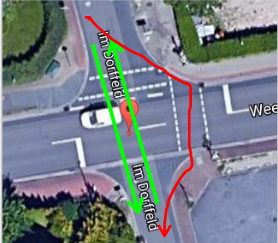 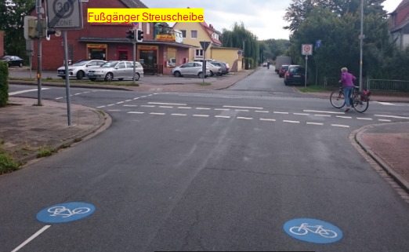
Extra Radfahrer-Ampel. Am besten als Dunkel-Dunkel Ampel geschaltet, damit in ruhigen Zeiten ein zügiges Überqueren möglich wird und keine Rotlicht-Sünder herangezogen werden.
| Kurzbeschreibung | Dorfstraße - Enge Fahrbahn - Tempo 30 u. Überholverbot |
|---|---|
| Mängelkarte | Link |
| Einstelldatum | 2019-09-23 |
| Status | offen |
| Autor | Jens Spille |
| Ort | Hemmingen Dorf - Dorfstraße |
| Fahrtrichtung | In beiden Richtungen |
| Verantwortlich | Region Hannover |
Die Dorfstraße ist unübersichtlich und eng. Ein Überholen, auch von Fahrrädern mit einem Abstand von mind. 1,5 m ist nicht sicher möglich.
Wir fordern Tempo 30 und ein Überholverbot von Fahrrädern.
Nach der StVO Novelle von 2019 soll mit der Einführung eines neuen Verkehrszeichens die zuständigen Straßenverkehrsbehörden in Zukunft ein Überholverbot von einspurigen Fahrzeugen (u. a. Fahrrädern) für mehrspurige Kraftfahrzeuge z. B. an Engstellen anordnen können.
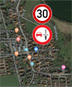
| Kurzbeschreibung | Drängelgitter |
|---|---|
| Mängelkarte | Link |
| Einstelldatum | 2019-09-23 |
| Status | offen |
| Autor | Jens Spille |
| Ort | Durchgang Saarstraße - Deveser Straße |
| Fahrtrichtung | In beiden Richtungen |
| Verantwortlich | Stadt Hemmingen |
Umlaufgitter verhindern das Durchkommen von Fahrrädern mit Anhänger und Lastenräder.
ERA: “Poller sind unzulässig, wo Verkehrsteilnehmer gefährdet oder der Verkehr erschwert werden kann. Sie müssen nachts und bei schlechten Sichtverhältnissen ausreichend erkennbar sein.”
Umlaufgitter entfernen, evtl. Verengung auf mindestens 2 m, um KFZ Verkehr zu verhindern.
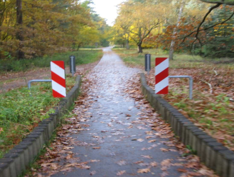
| Kurzbeschreibung | Berliner Straße - Linksseitiger Radweg Katzbachweg - Querung ohne Führung |
|---|---|
| Mängelkarte | Link |
| Einstelldatum | 2017-09-10 |
| Status | offen |
| Autor | Jens Spille |
| Ort | Hemmingen Westerfeld - Berliner Straße (Höhe Katzbachweg) |
| Fahrtrichtung | In Richtung Ost |
| Verantwortlich | Hemmingen |
Radfahrer von der B3 kommend und auf der rechten Seite den Radweg fahrend, müssen ab dem Katzbachweg die linksseitigen verpflichtenden Radweg benutzen. Es gibt keinerlei Führung oder Hilfsmittel um hier die Berliner Straße gefahrlos zu überqueren. Insbesondere von hinten kommenden B3 Rechtsabbieger können schnell übersehen werden.
 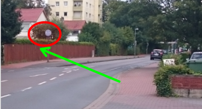
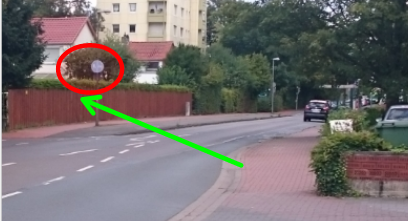
Radfahrer die aus Richtung Norden von der B3 (alt) kommen, dürfen nicht links bleiben, obwohl Sie 200 Meter später links fahren müssen.
Die Berliner Straße in Hemmingen-Westerfeld stellt eine wichtige Ost- West-Verbindung dar und hat aufgrund der anliegenden KGS auch für den Schulverkehr eine gewisse Bedeutung. Im Straßenzug ist überwiegend Stadt Hemmingen – Radverkehrskonzept 27 eine Geschwindigkeit von 30 km/h angeordnet. Die Radfahrenden werden auf einem auf der nördlichen Seite verlaufenden benutzungspflichtigen gemeinsamer Geh- und Radweg in beiden Fahrtrichtungen geführt.
In Anpassung an die rechtlichen Gegebenheiten und vor dem Ziel den Radverkehr komfortabel und sicher zu führen, wird empfohlen, die Benutzungspflicht des gemeinsamen Geh- und Radweges aufzuheben. Für die Radfahrenden wird eine Führung auf der Fahrbahn empfohlen. Am südlichen Fahrbahnrand der Berliner Straße ist die Einrichtung eines einseitigen Schutzstreifens mit einer Mindestbreite von 1,50 m vorzusehen. Der Einsatz von Schutzstreifen ist vom Verkehrsaufkommen und der Fahrbahnbreite abhängig. Aufgrund der zur Verfügung stehenden Fahrbahnbreite ist dies für die nördliche Seite nicht möglich. Somit soll der Radfahrende in westliche Richtung im Mischverkehr auf der Fahrbahn fahren. Ergänzend kann der nördliche Seitenraum Richtungsbezogen für den Radverkehr freigegeben werden.
| Kurzbeschreibung | Berliner Straße - Radwegebenutzungspflicht überprüfen |
|---|---|
| Mängelkarte | Link |
| Einstelldatum | 2019-06-03 |
| Status | offen |
| Autor | RADar! |
| Ort | Berliner Straße zwischen Katzbachweg und Köllnbrinkweg |
| Fahrtrichtung | In beiden Richtungen - Insbesondere in Richtung Osten |
| Verantwortlich | Stadt Hemmingen |
Über RADar! wurde eine neue Meldung eingestellt. ID: 2019-19545
Adresse: Berliner Straße, Hemmingen, Wilkenburg, Hemmingen, Region Hannover, Niedersachsen, 30966, Deutschland
Meldungsgrund: Radwegebenutzungspflicht überprüfen
weitere Angaben: Nur zwischen Katzbachweg und Köllnbrinkweg ist für Fahrtrichtung nach Osten ein linksseitiger Radweg vorgeschrieben. Als Radfahrer von Penny kommend muss ich also für diesen Bereich auf die Linke Seite wechseln und danach wieder auf die Rechte Seite fahren, auch wenn sich auf dem Fußweg (Fahrrad frei) zu viele Fußgänger befinden. Warum ist hier die Linke Seite vorgeschrieben?
Radwegebenutzungspflicht aufheben.
| Kurzbeschreibung | Geradeausfahrer aus Dorle-und-Albrecht-Heuer-Weg werden ignoriert |
|---|---|
| Mängelkarte | Link |
| Einstelldatum | 2017-09-10 |
| Status | Verwaltung bekannt |
| Autor | Jens Spille |
| Ort | Hemmingen - Westerfeld - Berliner Straße - Köllnbringweg/Dorle-und-Albrecht-Heuer-Weg |
| Fahrtrichtung | Aus Dorle-und-Albrecht-Heuer-Weg in Richtung Köllnbringweg |
| Verantwortlich | Hemmingen |
Der Dorle-und-Albrecht-Heuer-Weg ist zwar eine kleine, aber zulässige Autostraße. Fahrzeuge (inkl. Radfahrer) die aus dieser Straße kommen und geradeaus in den Köllnbringweg fahren wollen, haben vor den Linksabbiegern aus dem Köllnbringweg Vorrang. Dieses ist den meisten Autofahrern nicht bewusst. Einige Radfahrer benutzen den benachbarten Fußgängerüberweg, das wird von einigen Autofahrern auch so erwartet.
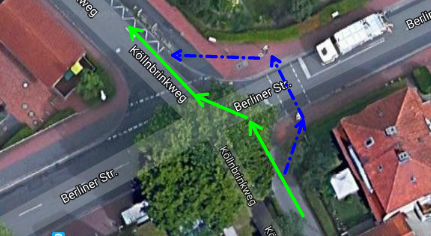
Hinweisschilder “Achtung Gegenverkehr” und Radfahrerfurt.
| Kurzbeschreibung | Bordsteinabsenkung zwischen Berliner Straße u. Döhrener Straße notwendig |
|---|---|
| Mängelkarte | Link |
| Einstelldatum | 2018-09-15 |
| Status | Bauamt bekannt |
| Autor | Jens Spille |
| Ort | Berliner Straße - Döhrener Straße |
| Fahrtrichtung | In beiden Richtungen |
| Verantwortlich | Hemmingen |
Die Auffahrt auf den Radweg Berliner Straße aus dem Dorf kommend ist schwierig, da die Bordsteinabsenkung nur in Richtung Döhren existiert.
Bordstein Abflachung
| Kurzbeschreibung | Döhrener Straße Seniebachbrücke - unangenehme Höhenunterschiede |
|---|---|
| Mängelkarte | Link |
| Einstelldatum | Stadtradeln 2019 |
| Status | offen |
| Autor | RADar! |
| Ort | Döhrener Straße |
| Fahrtrichtung | In beiden Richtungen |
| Verantwortlich | Region |
Über RADar! wurde eine neue Meldung eingestellt. ID: 2019-19544
Adresse: Hemminger Kirchweg, Wilkenburg, Hemmingen, Region Hannover, Niedersachsen, 30966, Deutschland
Meldungsgrund: Übergänge mit zu großen Höhenunterschieden (z. B. Bordsteine)
weitere Angaben: Bei der Reparatur der Brücke wurde auf Kosten der Radfahrer die Autofahrbahn sehr eben gestaltet. Radfahrer dagegen versprühen sehr unangenehme Höhenunterschiede, insbesondere bei Geschwindigkeiten von mehr als 20 km /h. Der Übergang müsste in einem flacheren Winkel und ohne Übergang erfolgen. Vor der Reparatur war der Radweg eben, ohne jede Erhöhung.
Der Übergang müsste in einem flacheren Winkel und ohne Übergang erfolgen.
| Kurzbeschreibung | Orientierungshilfe zur gefahrlosen Umfahrung der Stadtbahn Baustelle |
|---|---|
| Mängelkarte | [Link]https://umap.openstreetmap.fr/en/map/adfc-hemmingen-pattensen_84202#15/52.3224/9.7277) |
| Einstelldatum | 2019-06-01 |
| Status | offen |
| Autor | Jens Spille |
| Ort | Orte um Stadtbahn Baustelle |
| Fahrtrichtung | In Richtung Baustelle |
| Verantwortlich | Unbekannt |
der ADFC Hemmingen/Pattensen möchte, sowohl ortskundige als auch ortsfremde Radfahrende, eine Orientierungshilfe zur gefahrlosen Umfahrung der Stadtbahn Baustelle geben. Dazu schlagen wir vor, Infotafeln an den den Zufahrten zur Baustelle, an Sammelpunkten wie Rathausplatz und Einkaufzentren aufzustellen und den Inhalt sowohl Online als auch per Pressemitteilung zu verbreiten.
Die Umleitungen verlaufen auf den Strecken, die Sie auch als Umleitung gekennzeichnet haben bzw. über die Fahrradstraßen. Die Empfehlungen sollten sich auf keinen Fall widersprechen.
Hier ein erster Entwurf, basierend auf der OpenStreetMap Karte, die nur den Hinweis „© OpenStreetMap-Mitwirkende“ verlangt. Vielleicht möchten Sie auch selber einen Entwurf auf Basis der LGLN Karte erstellen.
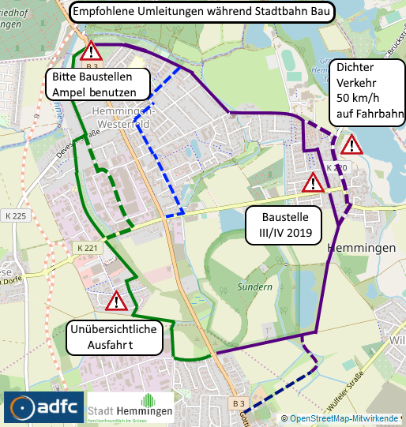
| Kurzbeschreibung | Enge Fahrbahn |
|---|---|
| Mängelkarte | Link |
| Einstelldatum | 2019-09-23 |
| Status | offen |
| Autor | Jens Spille |
| Ort | Göttinger Landstraße - nördlich Kirchdamm |
| Fahrtrichtung | In Richtung Norden |
| Verantwortlich | Unbekannt |
Nach dem Umbau der B3 alt wegen der Stadtbahnverlängerung wird es für den Radverkehr eng. Vorgesehen ist eine Fahrbahnbreite von 3.00 m mit einem Schutzstreifen von 1.50 m und Parkstreifen von 2.0 m. Der KFZ Verkehr kann wegen der Gleiskörpers nicht nach links ausweichen. Wir haben 2014 vorgeschlagen:
Einwand: Heutige Fahrzeuge, sogenannte SUVs und Vans, sind teilweise breiter als 2 m und auch Lieferfahrzeuge werden hier halten und in den Schutzstreifen hinein ragen. Wir fordern, die Verbreiterung der Parkbuchten und einen Sicherheitsstreifen. Vorschlag: Eine Verbreiterung der Parkbuchten auf mindestens 2,3 m. Weiterhin eine Verbreiterung des östlichen Schutzstreifens auf 1,75 m. Wir würden eine Reduzierung des westlichen Schutzstreifens auf 1,5 m gerne in Kauf nehmen. Wir brauchen einen Sicherheitsstreifen zu sich plötzlich öffnende KFZ-Türen.
Dieses wurde damals abgelehnt.
Jetzt fordert die Novelle der StvO 2019 einen Überholabstand von 1.5 m zwischen Radfahrenden und dem KFZ Verkehr. Dieses kann auf Grund der baulichen Gegebenheiten nicht gewährleistet werden. Wir fordern deshalb ein Überholverbot von Radfahrenden.
Damit hat der Radfahrende zu mindestens die Möglichkeit einen, von Gerichten geforderten, Sicherheitsabstand von 0,8 bis 1,2 m zu parkenden Fahrzeugen einzuhalten und gleichzeitig eine gesetzliche Sicherheit nicht durch überholende Fahrzeuge bedrängt zu werden.
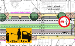
| Kurzbeschreibung | Berliner Straße - Einmündung Hohe Bünte begradigen |
|---|---|
| Mängelkarte | Link |
| Einstelldatum | 2017-09-10 |
| Status | offen |
| Autor | Jens Spille |
| Ort | Hemmingen - Westerfeld - Berliner Straße - Einmündung Hohe Bünte |
| Fahrtrichtung | In beiden Richtungen |
| Verantwortlich | Stadt Hemmingen |
Radfaher auf dem gemeinsamen, einseitigen, zweirichtungs Rad- und Fußweg, müssen in der Einmündung Hohe Bünte der eingerückten Furt folgen. Hinzu kommt das die Radfahrerfurt sehr schmal und nur einseitig vom Zebrastreifen angeordnet ist. Damit ist der Radfahrer nicht mehr im Sichtfeld des von der Berliner Straße kommenden rechts abbiegenden Autofahrer.
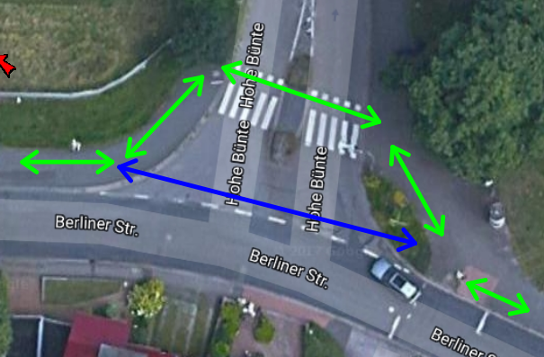 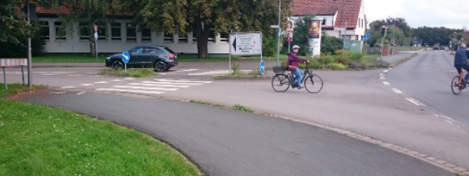
Straßenbegleitende Radwegeführung
| Kurzbeschreibung | Berliner Straße - Haltestelle KGS - Konflikt zwischen Wartenden und Radfahrern |
|---|---|
| Mängelkarte | Link |
| Einstelldatum | Stadtradeln 2019 |
| Status | offen |
| Autor | RADar! |
| Ort | Berliner Straße - Haltestelle KGS |
| Fahrtrichtung | Alle |
| Verantwortlich | Stadt Hemmingen |
Über RADar! wurde eine neue Meldung eingestellt. ID: 2019-19547
Adresse: Berliner Straße, Hemmingen, Wilkenburg, Hemmingen, Region Hannover, Niedersachsen, 30966, Deutschland
Meldungsgrund: Unfallschwerpunkt
weitere Angaben: Den Trampelpfad bei der Bushaltestelle Börie als Radweg ausbauen (direkter Weg zur KGS). Wenn man als Fußgänger in den Bus steigen will, ist es sehr unangenehm, wenn die vielen Schüler die aus der Börie kommen zwischen den wartenden Passanten hindurch kurven.
Trampelpfad bei der Bushaltestelle Börie als Radweg ausbauen.
| Kurzbeschreibung | Am Siek - Drängelgitter abbauen |
|---|---|
| Mängelkarte | Link |
| Einstelldatum | 2017 |
| Status | Gemeldet |
| Autor | Jens Spille |
| Ort | Hemmingen, Am Siek |
| Fahrtrichtung | Alles |
| Verantwortlich | Stadt Hannover |
Umlaufgitter verhindern das Durchkommen von Fahrrädern mit Anhänger und Lastenräder.
ERA: “Poller sind unzulässig, wo Verkehrsteilnehmer gefährdet oder der Verkehr erschwert werden kann. Sie müssen nachts und bei schlechten Sichtverhältnissen ausreichend erkennbar sein.”
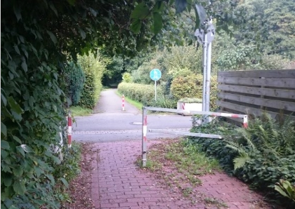
Umlaufgitter entfernen, evtl. Verengung auf mindestens 2 m, um KFZ Verkehr zu verhindern.
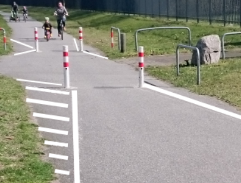
Evtl. rote Furt über Klewertweg. Vorfahrt ändern. Um bessere Sichtverhältnisse zu gewähren.
| Kurzbeschreibung | Hohe Bünte - Verbindung Fahrradstraße zum Radweg optimieren |
|---|---|
| Mängelkarte | Link |
| Einstelldatum | Stadtradeln 2019 |
| Status | Hohe Bünte |
| Autor | RADar! |
| Ort | Hohe Bünte - Nähe Freibad |
| Fahrtrichtung | Alle |
| Verantwortlich | Stadt Hemmingen |
Meldung per Radar! ID: 2019-19546
Adresse: Hohe Bünte, Wilkenburg, Hemmingen, Region Hannover, Niedersachsen, 30966, Deutschland
Meldungsgrund: Auffahrt auf Radweg nur mit Umweg möglich
weitere Angaben: Wenn man aus Ricklingen kommt, und vor der Shinebar auf die Straße fahren möchte (Fahrradstraße) muss man unglücklich um die Ecke kurven.
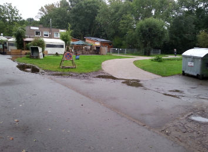
Verbindung verbessern
| Kurzbeschreibung | Hemminger Kirchweg nahe Osterbrückenweg - Bruchkante |
|---|---|
| Mängelkarte | Link |
| Einstelldatum | 2019-05-27-Mo |
| Status | Gemeldet |
| Autor | RADar! |
| Ort | Hemminger Kirchweg |
| Fahrtrichtung | Alle |
| Verantwortlich | Stadt Hannover |
Diese Meldung kam über RADar! rein. ID: 2019-19480
Adresse: Großer Hemminger Teich, Hemminger Kirchweg, Wilkenburg, Hemmingen, Region Hannover, Niedersachsen, 30966, Deutschland
Meldungsgrund: Loch, Unebenheit, Bruch oder Riss im Oberbau erhöht Sturzrisiko
weitere Angaben: An der Grenze zur Stadt Hannover 52.335427,9.738917
| Kurzbeschreibung | Lücke Wilkenburg - Grassdachhaus |
|---|---|
| Mängelkarte | Link |
| Einstelldatum | 2015 |
| Status | offen |
| Autor | Radverkehrskonzept |
| Ort | Pattenser Feldweg nach Hiddestorf |
| Fahrtrichtung | In beiden Richtungen |
| Verantwortlich | Stadt Hemmingen |
Geforderter Lückenschluss aus Radverkehrskonzept 2015.
Verbindung herstellen
Aus Radverkehrskonzept 2015 bekannt.
| Kurzbeschreibung | Querungshilfe fehlt |
|---|---|
| Mängelkarte | Link |
| Einstelldatum | 2014 “Gesamtkonzept wasserbezogener Naherholung” |
| Status | Verbesserungsvorschlag |
| Autor | Jens Spille |
| Ort | Steinfeldsees bis Grassdachaus |
| Fahrtrichtung | Von West nach Ost |
| Verantwortlich | Hemmingen und Laatzen (plus Naturschutzbehörden) |
Es fehlt ein Konzept zur Entlastung und Entschärfung der sogenannten Wilkenburger Spinne. Bewohner, die von Westerfeld, Arnum oder Wilkenburg nach Laatzen müssen, haben keine andere Wahl, als über die Wilkenburger Spinne nach Wülfel zu fahren. Die Radwege in der Leinemasch sind bei Regen und im Winter nicht oder nur noch sehr eingeschränkt passierbar.
Hier sollte man die Diskussion über eine Brücke zwischen Wilkenburg und Laatzen, wie sie 2014 im „Gesamtkonzept wasserbezogener Naherholung“ vorgestellt wurde, wieder beleben. Es sollte untersucht werden, in wieweit eine Reduzierung von Abgasen, Feinstäube, Lärm und Unfallgefahren und die Förderung des Radverkehrs, einen Schotterweg in der Nähe des Steinfeldsees rechtfertigt.
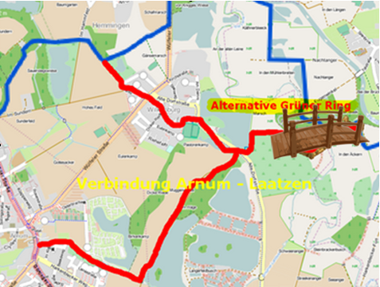
| Kurzbeschreibung | Querung Dörrieweg - Kösterecke - Bordsteinabsenkung |
|---|---|
| Mängelkarte | Link |
| Einstelldatum | 2017-09-10 |
| Status | Ist der Verwaltung bekannt |
| Autor | Jens Spille |
| Ort | Wilkenburg - Wülfeler Straße (L389) - Kreuzung Dörrieweg - Kösterecke |
| Fahrtrichtung | Von Dörrieweg zur Kösterecke |
| Verantwortlich | Region |
Radfahrer die, die Wülfeler Straße (L 389) queren wollen, können entweder den Fußgängerüberweg “schiebend” benutzen, da diese eine Fußgängerstreuscheibe besitzt, oder sie queren direkt die L 389. Soweit OK. Durch den hochstehenden Bordstein werden sie am zügigen Überqueren gehindert.
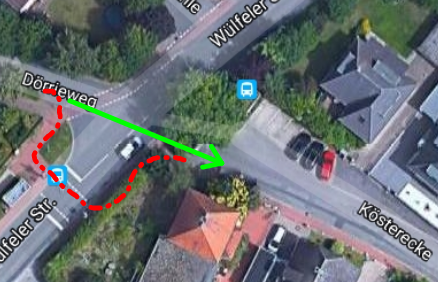 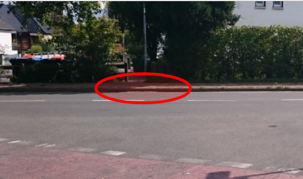
Bordsteinabsenkung
| Kurzbeschreibung | Ortsdurchfahrt Wilkenburg - Radweg-Nichtradweg-Radweg |
|---|---|
| Mängelkarte | Link |
| Einstelldatum | 2017-09-11 |
| Status | Ist der Verwaltung bekannt |
| Autor | Marko Schröder |
| Ort | Wilkenburg, Wülfeler Straße |
| Fahrtrichtung | In beiden Richtungen |
| Verantwortlich | Region Hannover |
Der Radweg entlang der L398 ist von Arnum bis Ortseingang / Friedhof Wilkenburg verpflichtend (Zeichen 240). Ab ca. Orteingang wird der Weg (zurecht aufgrund der geringen Breite) zum “Fußweg / Radfahrer frei” herabgestuft, d. h. der Alltagsradfahrer/Berufspendler sollte/muss auf die Straße wechseln. Nach der Kurve vor der Kirchstraße neben der Pferdekoppel wird der Weg wieder zum verpflichtenden Radweg auf der linken Seite heraufgestuft, d. h. ein erneuter Wechsel der Straßenseite steht an.
Erschwerend kommt hinzu, dass der Rad-/Fußweg für beide Fahrtrichtungen freigegeben ist und in der Ortsdurchfahrt Wilkenburg dafür eigentlich zu schmal ist.
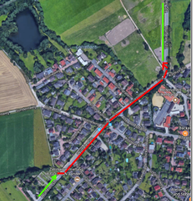
Maximalforderung: Einen der ERA entsprechenden Radweg durch Wilkenburg bauen. Realistisch: Warnzeichen 138 an den gefährlichen Stellen aufstellen. Eventuell einen Radstreifen einrichten. Dieser würde allerdings nicht das Problem des doppelten Seitenwechsels lösen.
| Kurzbeschreibung | L 389 gefährliche Schlaglöcher im Radweg - Sturzgefahr |
|---|---|
| Mängelkarte | Link |
| Einstelldatum | 2017-09-10 |
| Status | Es ist der Region bekannt |
| Autor | RADar! |
| Ort | Wülfeler Straße (L 389) zwischen Wilkenburg und Wilkenburger Spinne |
| Fahrtrichtung | In beiden Richtungen |
| Verantwortlich | Region Hannover |
Gefahr durch Stürze, besonders entlang der Längskanten.
Der alte kombinierte Rad-/Fußweg an der Wülfeler Str zwischen Wilkenburg und Dorfstr (Spinne) ist seit Langem ein Ärgernis mit Rissen, Brüchen und Wellen. Wer seinen Rücken liebt, fährt auf der Straße und setzt sich dem hupenden, drängelnden Autoverkehr aus. Positives Beispiel: Die Weiterführung auf Hannoverscher Seite.
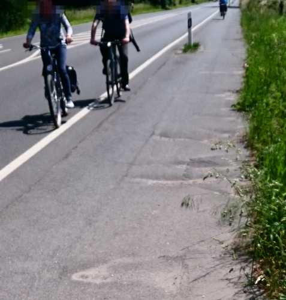
ID: 2019-19318
Adresse: Wülfeler Straße, Arnum, Wilkenburg, Region Hannover, Niedersachsen, 30966, Deutschland
Meldungsgrund: Loch, Unebenheit, Bruch oder Riss im Oberbau erhöht Sturzrisiko
weitere Angaben: 2019-05-27-Mo
ID: 2019-19275
Adresse: Wülfeler Straße, Wilkenburg, Region Hannover, Niedersachsen, 30966, Deutschland
Meldungsgrund: Loch, Unebenheit, Bruch oder Riss im Oberbau erhöht Sturzrisiko
weitere Angaben: Der alte kombinierte Rad-/Fußweg an der Wülfeler Str zwischen Wilkenburg und Dorfstr (Spinne) ist seit Langem ein Ärgernis mit Rissen, Brüchen und Wellen. Wer seinen Rücken liebt, fährt auf der Straße und setzt sich dem hupenden, drängelnden Autoverkehr aus. Positives Beispiel: Die Weiterführung auf Hannoverscher Seite.
Sanierung
| Kurzbeschreibung | Hotel zur Post - Gefährliche Einfädelung und spitzwinklig Querung |
|---|---|
| Mängelkarte | Link |
| Einstelldatum | 2019-09-22 |
| Status | offen |
| Autor | Jens Spille |
| Ort | Hemmingen Dorf - Vor Hotel zu Post |
| Fahrtrichtung | In beiden Fahrtrichtungen |
| Verantwortlich |
Der gemeinsame Geh und Radweg wird in Höhe der Querungshilfe zum reinen Gehweg. Für die Einfädelung auf die Fahrbahn ist die engste Stelle bei der Querungshilfe vorgesehen. Hinzu kommt das die Bordstein Absenkung sehr kurz ist. Es ist schwierig gleichzeitig den KFZ Verkehr von hinten zu beobachten und gleichzeitig die Absenkung zu treffen.
Eine Einfädelspur schaffen und ‘Achtung Radfahrer’ Zeichen aufstellen.
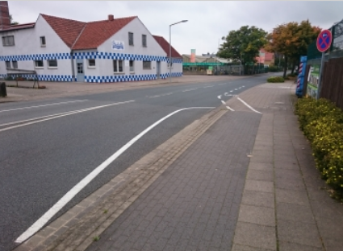
Beispiel Einfädelhilfe aus Wunstorf - Koordinaren 52.42882/9.41554 ‘Am hohen Holz’ gegenüber Rübensaftkocherei Reinhold - lecker
Hier gibt es zwei Möglichkeiten, entweder der Radfahrer benutzt die Fahrbahn und möchte die Querungshilfe benutzen um auf den linksseitigen Geh und Radweg zu kommen. Das geht auf Grund der Baulichen Anordnung fast nur im rechten Winkel.
Oder der Radfahrer kommt vom Gehweg - Radfahrer frei auf der rechten Seiten und muss die viel zu schmalen Bordsteinabsenkung benutzen.
Eine Aufstellfläche vor der Querungshilfe für Radfahrer die die Fahrbahn benutzen und breitere Bordsteinabsenkungen für die Anderen.
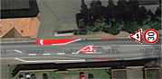
| Kurzbeschreibung | Wilkenburger Spinne - Gefährliche Zweirichtungsquerung |
|---|---|
| Mängelkarte | Link |
| Einstelldatum | 2017-09-09 |
| Status | Verwaltung bekannt |
| Autor | Jens Spille |
| Ort | Einmündung Dorfstraße (K221) auf der Wülfeler Straße (L 389) |
| Fahrtrichtung | In beiden Richtungen |
| Verantwortlich | Region Hannover |
Der Radweg entlang der Wülfeler Straße (L 389) (grüner Pfeil) hat eine abgefahrene rote Markierung in der Einmündung Dorfstraße (K 221). Zu den Stoßzeiten bildet sich ein Rückstau auf der Dorfstraße, da auf der Wülfeler Straße ein kontinuierlicher Verkehrsfluss besteht. Durch den “Druck” der Fahrer eine Lücke erwischen zu müssen (Tunnelblick), sind Radfahrer und Fußgänger auf der Querung nicht mehr sicher.
Desweiteren ist die Querung (blauer Pfeil) vom Parkplatz kommend sehr gefährlich, da der Verkehr aus Richtung Wilkenburg hinter einer Kurve liegt. “Grüner Ring”.
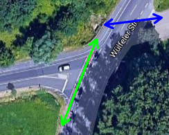 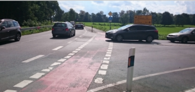
Hier brauchen wir dringend eine Entschleunigung - Ideal wäre ein Kreisel, mit STOP und Zusatzzeichen Radfahrer von links und rechts. - Notfalls eine LSA - Dringend eine Geschwindigkeitsbegrenzung auf 50 km/h.
Für die Querung aus und zu dem Parkplatz wäre eine Querungshilfe (Verkehrsinsel) sinnvoll. Mindestens ein Spiegel.
| Kurzbeschreibung | Orientierungslos am Ortseingang - fehlende Ortstafeln |
|---|---|
| Mängelkarte | Link |
| Einstelldatum | 2017-09-10 |
| Status | Ist der Verwaltung bekannt |
| Autor | Jens Spille |
| Ort | Hemmingen Pattensen - alle nicht straßenbegleitende Radwege |
| Fahrtrichtung | Nach Hemmingen rein - aus allen Richtungen |
| Verantwortlich | Hemmingen |
Ortsunkundige wissen nicht wann sie welchen Ort passieren. Hinweise auf Sehenswürdigkeiten und Hilfe (Gastronomie, Lebensmittel und Pannendienst) erleichtern das Leben und solche Gäste kommen wieder.
Beispiel Ortseingangstafel aus Koldingen. Aufgestellt vom Ortsrat
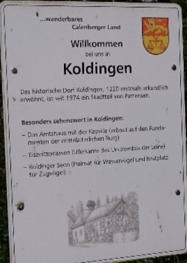
| Kurzbeschreibung | Wilkenburger Spinne - Zeichen für KFZ aus Richtung Süden - Achtung Radfahrer |
|---|---|
| Mängelkarte | Link |
| Einstelldatum | 2019-05-27-Mo |
| Status | offen |
| Autor | RADar! |
| Ort | Parkplatz Wilkenburger Spinne |
| Fahrtrichtung | Von Oste nach West |
| Verantwortlich | Land Niedersachsen |
Über RADar! wurde eine neue Meldung eingestellt. ID: 2019-19279
Adresse: Wilkenburger Straße, Wülfel, Döhren-Wülfel, Hemmingen, Region Hannover, Niedersachsen, 30519, Deutschland
Meldungsgrund: Sichere Straßenquerung fehlt
weitere Angaben: Wer als Radfahrer vom Grünen Ring kommend an der Wilkenburger Spinne die Wilkenburger Str. überqueren muss, um auf den ggü liegenden Radweg oder die Dorfstr. zu gelangen, wird von Autofahrern aus Richtg Wilkenburg erst spät gesehen wie auch umgekehrt, da die Gefahrenstelle hinter einer leichten Kurve liegt.
Deutliche Warnschilder, die auch im Dunkeln gut sichtbar sind, aus rechtzeitiger Entfernung könnten helfen.
| Kurzbeschreibung | Radweg Wilkenburger Spinne bis Ziegenbocksbrücke - bei Nässe rutschig |
|---|---|
| Mängelkarte | Link |
| Einstelldatum | 2019-09-23 |
| Status | immer mal wieder angesprochen |
| Autor | Jens Spille |
| Ort | Radweg Wilkenburger Spinne bis Ziegenbocksbrücke |
| Fahrtrichtung | In beiden Richtungen |
| Verantwortlich |
Weg ist bei Regen nass und dreckig. Rutschgefahr.

Sanierung
| Kurzbeschreibung | Radwegverschwenkung und Einengung auf Brücke |
|---|---|
| Mängelkarte | Link |
| Einstelldatum | 2017-09-11 |
| Status | offen |
| Autor | M. Schröder |
| Ort | Brückstraße |
| Fahrtrichtung | Alle |
| Verantwortlich | Region (Kreis) |
Für eine Brücke wird der Radweg verschwenkt und verengt, die Verschwenkung ist im Dunklen schlecht erkennbar, die Breite ist für sich begegnende Radfahrer eng.
Mangel/Gefahr: Der Radweg entlang der K20 wird für eine kleine Brücke stark verschwenkt und die Radwegbreite eingeschränkt. Die Radwegführung ist im Dunklen schlecht erkennbar, der Radweg wird sehr eng an die K20 herangeführt (Abgrenzung nur durch eine Art Bordstein), die Radwegbreite im Bereich der Verschwenkung ist für sich begegnende Radfahrer eng. Ergänzung: Von Hemmingen Richtung Hannover ist eine Absperrschranke (Zeichen 600) angebracht, die in Richtung Hemmingen fehlt.
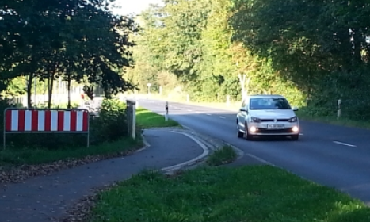
Mögliche Maßnahmen: Erkennbarkeit im Dunklen durch geeignete Reflektoren o. ä. erhöhen, Absperrschranke auch in Richtung Hemmingen anbringen, Abgrenzung des Radwegs in Richtung des Gewässers und der Straße verbessern.